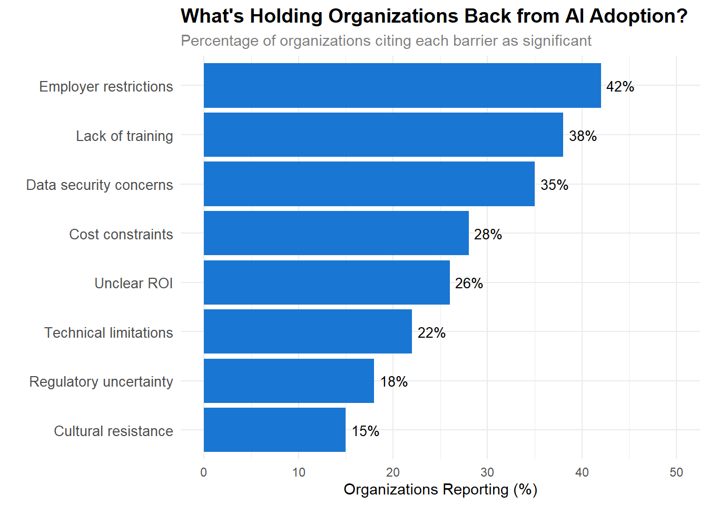
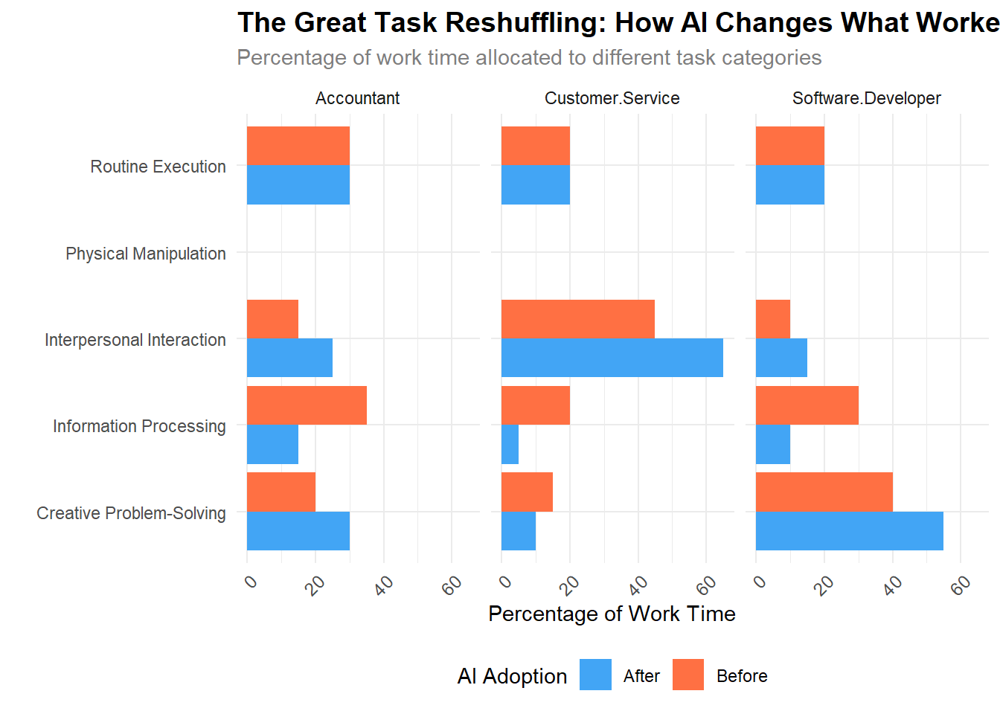

%%{init: {'theme':'neutral'}}%%
flowchart TD
A["Human Creators"] --> B{"Without AI"}
B --> C["Wide Distribution of Creative Output"]
C --> D["High Variance, Low Average Quality"]
A --> E{"With AI"}
E --> F["AI Suggestions"]
F --> G["Convergence Toward Statistical Center"]
G --> H["Low Variance, High Average Quality"]
style C fill:#e1f5fe
style D fill:#e1f5fe
style G fill:#fff3e0
style H fill:#fff3e0
Artificial intelligence tools expand scientists’ impact but contract science’s focus
Qianyue Hao, Fengli Xu, Yong Li & James Evans Nature volume 649, pages1237 to 1243 (2026)Cite this article
36k Accesses
15 Citations
1011 Altmetric
Metricsdetails
Abstract Developments in artificial intelligence (AI) have accelerated scientific discovery1. Alongside recent AI-oriented Nobel prizes2,3,4,5,6,7,8,9, these trends establish the role of AI tools in science10. This advancement raises questions about the influence of AI tools on scientists and science as a whole, and highlights a potential conflict between individual and collective benefits11. To evaluate these questions, we used a pretrained language model to identify AI-augmented research, with an F1-score of 0.875 in validation against expert-labelled data. Using a dataset of 41.3 million research papers across the natural sciences and covering distinct eras of AI, here we show an accelerated adoption of AI tools among scientists and consistent professional advantages associated with AI usage, but a collective narrowing of scientific focus. Scientists who engage in AI-augmented research publish 3.02 times more papers, receive 4.84 times more citations and become research project leaders 1.37 years earlier than those who do not. By contrast, AI adoption shrinks the collective volume of scientific topics studied by 4.63% and decreases scientists’ engagement with one another by 22%. By consequence, adoption of AI in science presents what seems to be a paradox: an expansion of individual scientists’ impact but a contraction in collective science’s reach, as AI-augmented work moves collectively towards areas richest in data. With reduced follow-on engagement, AI tools seem to automate established fields rather than explore new ones, highlighting a tension between personal advancement and collective scientific progress.
Generalization bias in large language model summarization of scientific research Open Access
Special Collection: Science, Society and Policy Uwe PetersCorresponding Author ORCID logo ; Benjamin Chin-Yee ORCID logo Author & article information R Soc Open Sci. (2025) 12 (4): 241776 . https://doi.org/10.1098/rsos.241776 Article history Related content Review history: https://www.webofscience.com/api/gateway/wos/peer-review/10.1098/rsos.241776 Split-Screen Views Icon Views Open Menu Open the PDFfor in another window EPUB | PDF Share Icon Share Cite Open Menu Tools Icon Tools Open Menu Search Site Abstract Artificial intelligence chatbots driven by large language models (LLMs) have the potential to increase public science literacy and support scientific research, as they can quickly summarize complex scientific information in accessible terms. However, when summarizing scientific texts, LLMs may omit details that limit the scope of research conclusions, leading to generalizations of results broader than warranted by the original study. We tested 10 prominent LLMs, including ChatGPT-4o, ChatGPT-4.5, DeepSeek, LLaMA 3.3 70B, and Claude 3.7 Sonnet, comparing 4900 LLM-generated summaries to their original scientific texts. Even when explicitly prompted for accuracy, most LLMs produced broader generalizations of scientific results than those in the original texts, with DeepSeek, ChatGPT-4o, and LLaMA 3.3 70B overgeneralizing in 26 to 73% of cases. In a direct comparison of LLM-generated and human-authored science summaries, LLM summaries were nearly five times more likely to contain broad generalizations (odds ratio = 4.85, 95% CI [3.06, 7.70], p < 0.001). Notably, newer models tended to perform worse in generalization accuracy than earlier ones. Our results indicate a strong bias in many widely used LLMs towards overgeneralizing scientific conclusions, posing a significant risk of large-scale misinterpretations of research findings. We highlight potential mitigation strategies, including lowering LLM temperature settings and benchmarking LLMs for generalization accuracy.
Humanizing AI
The Rapid Adoption of Generative AI Alexander Bick, Adam Blandin, David J. Deming Published Online:20 Jan 2026https://doi.org/10.1287/mnsc.2025.02523 Abstract Generative artificial intelligence (genAI) is a potentially important new technology, but its impact on the economy depends on the speed and intensity of adoption. This paper reports results from a series of nationally representative U.S. surveys of genAI use at work and at home. As of late 2024, 45% of the U.S. population age 18 to 64 uses genAI. Among employed respondents, 27% used genAI for work at least once in the previous week: 10% used it every workday and 17% on some but not all workdays. Relative to each technology’s first mass-market product launch, work adoption of genAI has been faster than the personal computer (PC), and overall adoption has outpaced both PCs and the internet by an even wider margin. Between 1% and 7% of all work hours are currently assisted by genAI, and respondents report time savings equivalent to 1.4% of total work hours. Potential productivity gains vary widely by industry, and firm climate and policies play an important role in adoption patterns.
This paper was accepted by Alfonso Gambardello, business strategy.
Funding: This work was supported by the Walmart Foundation [Grant 252882].
Supplemental Material: The online appendix and data files are available at https://doi.org/10.1287/mnsc.2025.02523.
Who is using AI to code? Global diffusion and impact of generative AI Simone Daniotti https://orcid.org/0009-0009-5974-9490, Johannes Wachs https://orcid.org/0000-0002-9044-2018, Xiangnan Feng https://orcid.org/0000-0001-8736-5018, and Frank Neffke https://orcid.org/0000-0002-3924-6636
Identity Disclosure and Anthropomorphism in Voice Chatbot Design: A Field Experiment
,
,
Published Online:26 Aug 2024https://doi.org/10.1287/mnsc.2022.03833
Abstract
Fueled by the widespread adoption of algorithms and artificial intelligence, the use of chatbots has become increasingly popular in various business contexts. In this paper, we study how to effectively and appropriately use voice chatbots, particularly by leveraging the two design features identity disclosure and anthropomorphism, and evaluate their impact on the firm operational performance. In collaboration with a large truck-sharing platform, we conducted a field experiment that randomly assigned 11,000 truck drivers to receive outbound calls from the voice chatbot dispatcher of our focal platform. Our empirical results suggest that disclosing the identity of the chatbot at the beginning of the conversation negatively affects operational performance, leading to around 11% reduction in the response probability. However, humanizing the voice chatbot by adding our proposed anthropomorphism features (i.e., interjections and filler words) significantly improves response probability, conversation length, and the probability of order acceptance intention by over 5.6%, 24.9%, and 10.1%, respectively. Moreover, even when the chatbot’s identity is disclosed along with humanizing features, the operational outcomes still improve. This finding suggests that enhancing anthropomorphism may potentially counteract the negative effects of chatbot identity disclosure. Finally, we propose one plausible explanation for the performance improvement, the enhanced trust between humans and algorithms, and provide empirical evidence that drivers are more likely to disclose information to chatbot dispatchers with anthropomorphism features. Our proposed anthropomorphism improvement solutions are currently being implemented and utilized by our collaborator platform.
Human-AI Disaggrement
The Power of Disagreement: A Field Experiment to Investigate Human, Algorithm Collaboration in Loan Evaluations
,
,
Published Online:4 Jul 2025https://doi.org/10.1287/mnsc.2022.03844
Abstract
Human, algorithm collaboration is becoming increasingly prevalent in the economy and society. However, this collaboration is not always fruitful, and in extreme cases, people become human borgs or totally averse to algorithms. The key to collaborative value is whether humans and algorithms can complement each other in decision making, but it is challenging for humans to disagree with algorithmic recommendations at the right time (i.e., to disagree when algorithms are wrong and not disagree when algorithms are right). To understand the centric role of disagreement in human, algorithm collaboration and examine when and how it benefits, we conducted a field experiment in which human evaluators and algorithms worked together to evaluate loan applications under four scenarios, that is, limited/rich information and with/without disclosure of algorithm rationale. Our results show that human, algorithm collaboration decisions outperformed human- or algorithm-only decisions, and these collaborative values varied across the four scenarios. We further propose a theoretical framework for mechanism examination that centers on the formation and effectiveness of disagreement. We validate the framework empirically and come to the following findings: (1) disagreement exhibits a sizable and nonlinear influence on collaborative value, (2) the differences between human evaluators and algorithms in decision making contribute to disagreement but not to collaborative value, (3) algorithm self-contradiction triggers disagreement and helps human evaluators disagree with algorithms at the right time. These findings provide valuable theoretical insights on how collaborative value is achieved and managerial insights on how to manage disagreement in human, algorithm collaboration.
The Great Transformation: How Artificial Intelligence is Reshaping Work, Creativity, and the Future of Human Labor
Introduction: The Dawn of a New Economic Era
In November 2022, a seemingly simple chatbot named ChatGPT was released to the public. Within five days, it had attracted a million users. Within two months, it reached 100 million. By July 2025, approximately 10% of the world’s adult population, nearly 800 million people, had become active users [@chatterji2025people]. This explosive adoption represents not just another technology trend, but potentially the most rapid technological transformation in human history.
The speed of this transformation dwarfs previous technological revolutions. Where the personal computer took decades to reshape the workplace, and the internet required years of infrastructure development before achieving mainstream adoption, generative artificial intelligence has infiltrated offices, creative studios, and production floors with unprecedented velocity. As @bick2024rapid document, work adoption of generative AI has matched the pace of personal computer adoption, while overall adoption has exceeded both PCs and the internet when measured from their first mass-market product launches.
Yet this is not merely a story of rapid adoption. It is a tale of fundamental transformation: one that is simultaneously enhancing human creativity while homogenizing it, dramatically boosting individual productivity while threatening entire categories of work, and creating opportunities for some while closing doors for others. The paradoxes embedded in this transformation demand careful examination, for they will shape not just our economic future, but the very nature of human work and creativity.
This chapter tells that story through the lens of rigorous empirical research, drawing on evidence from millions of workers, hundreds of thousands of firms, and dozens of controlled experiments conducted in the first three years of the generative AI revolution. What emerges is a complex portrait of technological change that defies simple narratives of either utopian enhancement or dystopian replacement.
The Questions That Matter
As we stand at this inflection point, several critical questions emerge:
The Creativity Question: Does AI enhance human creativity, or does it lead to a troubling convergence of ideas and expressions?
The Productivity Question: How much more productive can humans become when augmented by AI, and who captures these gains?
The Employment Question: Will AI complement or substitute for human workers, and how will this vary across different types of work?
The Inequality Question: Does AI level the playing field by helping lower-skilled workers catch up, or does it create new forms of digital divides?
The Adoption Question: Who is using these tools, how intensively, and what determines the pace and pattern of adoption?
This chapter systematically addresses each of these questions, building a picture of AI’s multifaceted impact on the modern economy.
Part I: The Creativity Paradox
The Dual Nature of AI-Enhanced Creativity
The impact of generative AI on human creativity presents us with our first paradox. In a carefully controlled experiment, @doshi2024generative asked writers to craft short stories, with some receiving AI-generated ideas as inspiration. The results were striking: stories written with AI assistance were judged to be more creative, better written, and more enjoyable to read. The effect was particularly pronounced for writers who scored lower on baseline creativity measures, AI appeared to be democratizing creative excellence.
But there was a catch. When the researchers analyzed the similarity between stories, they discovered something troubling: AI-assisted stories were significantly more similar to each other than stories written by humans alone. The technology that made individual writers more creative was simultaneously making collective creativity more homogeneous.
This finding illuminates a fundamental tension in the age of AI. As @doshi2024generative frame it, we face a social dilemma: writers are individually better off using AI, but collectively, society produces a narrower scope of novel content. It’s as if AI provides everyone with a more powerful creative engine, but all the engines are manufactured in the same factory, running on the same fuel, producing variations on the same underlying patterns.
The Homogenization Effect: A Deeper Look
To understand why this homogenization occurs, we must consider how generative AI works. These systems are trained on vast corpora of existing human creative works, learning patterns, styles, and structures that appear most frequently in their training data. When humans use AI for creative assistance, they’re essentially tapping into a statistical distillation of past human creativity. The AI suggests ideas that are, by design, probable given what has come before.
This creates what we might call a “creative gravity well”, AI suggestions pull human creators toward the center of the distribution of existing ideas rather than pushing them toward the edges, where true innovation occurs. The most creative individuals, who might naturally gravitate toward unusual or unprecedented ideas, find themselves gently guided back toward the mainstream. Meanwhile, less naturally creative individuals are lifted up toward this same center point, improving their individual output but contributing to an overall convergence (Figure Figure 1).
The Advertising Revolution and Consumer Perception
Yet perhaps the most revealing test of AI’s creative paradox comes not from artistic domains but from commercial ones. In advertising, where creativity is explicitly measured against concrete outcomes (e.g., engagement, recall, purchase intent), we can examine whether the quality improvements and homogenization effects observed in the creative industries hold true. Moreover, advertising offers a unique lens: consumers encounter AI-generated creative work, and their reactions reveal something crucial about whether the creative convergence problem is merely academic or fundamentally matters in the real world.
@hartmann2025power conducted pioneering experiments systematically comparing AI-generated to human-made marketing images across critical dimensions. Using state-of-the-art generative text-to-image models, they created synthetic marketing images based on real-world human-made examples. Their findings were striking: human evaluators rated AI-generated marketing imagery as superior to human-made images in quality, realism, and aesthetics. When given identical creative briefings, AI models also excelled in ad creativity, ad attitudes, and prompt following compared to commissioned human freelancers. Most tellingly, a field study with over 100,000 impressions demonstrated that AI-generated banner ads achieved up to 50% higher click-through rates than professional human-made stock photography. These results suggest that generative AI can enable advertisers to produce marketing content not only faster and orders of magnitude cheaper, but also at superhuman effectiveness levels.
Implications for Creative Industries
The creativity paradox has profound implications for industries built on novelty and differentiation. Consider the publishing industry, where the discovery of fresh voices and perspectives has traditionally been a key value proposition. If AI assistance leads to a convergence of writing styles and story structures, publishers may find it increasingly difficult to identify truly distinctive work. The slush pile may become more professionally written but less varied, making the discovery of breakout talent paradoxically harder.
Similarly, in advertising and marketing, where differentiation is paramount, the widespread adoption of AI tools could lead to a troubling sameness in campaigns and messaging. While each individual campaign might be more polished and effective than before, the collective impact might be a marketplace of ideas that feels increasingly homogeneous.
This paradox suggests that as AI tools become more prevalent, the ability to deliberately diverge from AI suggestions, to recognize and resist the pull of the statistical center, may become a crucial creative skill. Organizations may need to develop new practices and metrics to ensure they’re not just optimizing for immediate quality improvements but also preserving the diversity and novelty that drive long-term innovation.
Part II: The Productivity Revolution
Engaging Customers with AI in Online Chats: Evidence from a Randomized Field Experiment
Published Online:1 Oct 2025https://doi.org/10.1287/mnsc.2022.03920
Abstract
We examine how artificial intelligence (AI) affected the productivity of customer service agents and customer sentiment in online interactions. Collaborating with a meal delivery company, we conducted a randomized field experiment that exploited exogenous variation in giving agents access to AI-generated suggestions. We found that AI improved both the efficiency and effectiveness of the interactions: AI-assisted agents responded faster, engaged customers more deeply, and achieved greater improvements in customer sentiment. The benefits were most pronounced for less-experienced agents. However, AI’s impact varied by conversation type: It improved efficiency and customer sentiment in subscription cancellation requests but was the least effective in repeat complaint scenarios because of systemic issues beyond the AI’s capability. A text analysis of agent messages suggests that improved customer sentiment was explained by AI-assisted agents exhibiting higher levels of key response characteristics: empathy, information, and solution. Furthermore, we exploit a unique data feature: Customers first chatted with an automated chatbot without any human intervention before they were transferred to human agents (who may or may not have had AI assistance). We found that if customers who had experienced chatbot comprehension failures were then connected to AI-assisted human agents, the involvement of AI negatively affected customer sentiment. This is because unusually rapid responses in the latter scenario led customers to believe they were still communicating with a chatbot only, suggesting a spillover from their initial negative chatbot experiences. Companies should understand the conversation contexts, such as customer intent and chatbot interactions, when integrating AI into their customer support strategies.
The Magnitude of Productivity Gains
While the impact on creativity presents us with paradoxes, the effect on productivity appears more straightforwardly positive, at least at first glance. The numbers are striking: @brynjolfsson2025generative found that customer support agents with access to AI assistance resolved 15% more issues per hour on average. @peng2023impact documented that software developers with AI pair programmers completed coding tasks 55.8% faster. @choi2025human observed that accountants using AI increased their weekly client support by up to 59% when comparing highest to lowest usage levels.
These are not marginal improvements. They represent potentially transformative gains in human productivity, comparable to or exceeding those achieved by previous general-purpose technologies. To put this in perspective, the introduction of the assembly line in manufacturing typically improved productivity by 20-30% [@karim2016assembly]. The personal computer revolution of the 1980s and 1990s generated annual productivity growth of about 1-2% [@dedrick2003information]. The productivity gains from AI appear to be arriving faster and at a larger magnitude than these previous technological revolutions.
The Heterogeneity of Impact
But these aggregate numbers mask enormous variation in who benefits and by how much. One of the most consistent findings across studies is that AI tends to help lower-skilled workers more than higher-skilled ones. @brynjolfsson2025generative found that novice customer service workers improved while experienced workers saw minimal gains. @noy2023experimental documented similar patterns among professional writers, with weaker performers benefiting most from ChatGPT assistance.
This pattern suggests that AI might serve as a “great equalizer” in the workplace, reducing skill-based inequality by bringing lower performers closer to the productivity levels of top performers. However, this interpretation requires nuance, as we’ll explore in the discussion of labor market effects.
The Mechanisms of Productivity Enhancement
To understand how AI generates these productivity gains, researchers have identified several key mechanisms:
Knowledge Dissemination
@brynjolfsson2025generative provide evidence that AI systems effectively capture and disseminate the best practices of high-performing workers. The AI learns from patterns in successful interactions and then guides less experienced workers toward these proven approaches. It’s as if every worker suddenly has access to a mentor who has absorbed the collective wisdom of the organization’s best performers.
Cognitive Offloading
@hoffmann2025generative document how AI enables software developers to shift their attention from routine coding tasks to higher-level design and problem-solving. By handling boilerplate code generation and routine debugging, AI frees up cognitive resources for more complex and creative tasks. This represents a fundamental shift in how knowledge work is performed, from doing the work to directing and refining AI’s output.
Time Reallocation
@dillon2025shifting found that workers with AI access spent two fewer hours per week on email and reduced their time working outside regular hours. This suggests that AI doesn’t just make workers faster at existing tasks but enables them to reallocate time toward higher-value activities or achieve better work-life balance (Figure Figure 2).
%%{init: {'theme':'neutral'}}%%
graph LR
A["Traditional Work Process"] --> B["Manual Task Execution"]
B --> C["Quality Checking"]
C --> D["Iteration and Refinement"]
D --> E["Final Output"]
F["AI-Augmented Process"] --> G["Task Delegation to AI"]
G --> H["Rapid Iteration"]
H --> I["Human Oversight and Direction"]
I --> J["Enhanced Output"]
style A fill:#ffebee
style F fill:#e8f5e9
K["Time Saved"] --> L["Reallocation"]
L --> M["Strategic Thinking"]
L --> N["Relationship Building"]
L --> O["Learning and Development"]
L --> P["Work-Life Balance"]
style K fill:#fff9c4
The Productivity Paradox of Our Time
Despite these impressive gains at the individual level, @dillon2025shifting raise an important question: why don’t we see larger shifts in aggregate productivity statistics? They found that while individual workers saved significant time, there were no detectable changes in the overall quantity or composition of tasks being completed at the organizational level.
This recalls the famous “productivity paradox” of the computer age, when Robert Solow quipped in 1987 that “you can see the computer age everywhere but in the productivity statistics.” Several explanations may apply to the current AI revolution:
The Adjustment Period Hypothesis
Organizations may need time to restructure their processes to fully capture AI’s benefits. Current productivity gains might be absorbed by organizational slack rather than translating into increased output or reduced employment.
The Quality vs. Quantity Trade-off
Organizations might be using AI-generated time savings to improve quality rather than increase quantity. @choi2025human found that AI use in accounting led to more granular financial reporting and faster monthly closes, improvements in quality and timeliness rather than volume.
The Complementary Investment Challenge
Realizing AI’s full potential may require complementary investments in training, process redesign, and organizational restructuring that take time to implement. The productivity gains we observe now might be just the tip of the iceberg.
Sectoral Variations in Productivity Impact
The impact of AI on productivity varies dramatically across sectors and types of work. Based on the research, we can construct a taxonomy of AI’s differential impact (Table Table 1).
| Sector | Task Type | Productivity Gain | Reference |
|---|---|---|---|
| Software Development | Code generation | 10-56% | @cui2025effects @peng2023impact @becker2025measuring |
| Customer Service | Query resolution | 14-15% | @brynjolfsson2025generative @susanto2024enhancing |
| Accounting | Data processing | 18-59% | @choi2025human |
| R&D | Drug discovery | 5-6% per AI unit | @wu2025impact @kanakia2025ai |
These variations reflect differences in task complexity, the availability of training data, regulatory constraints, and organizational readiness for AI adoption.
Part III: The Great Labor Market Transformation
The Employment Equation
Perhaps no question about AI generates more anxiety than its impact on employment. Will AI be a job destroyer or a job transformer? The emerging evidence suggests the answer is both, and neither, it depends critically on the specific occupation, the nature of tasks involved, and the time horizon we consider.
The Junior Worker Crisis
One of the most concerning findings comes from @lichtinger2025generative and @brynjolfsson2025canaries, who document sharp declines in employment for junior workers in AI-exposed occupations. Early-career workers (ages 22-25) experienced 16% relative employment declines, while employment for experienced workers remained stable. This pattern appears consistently across multiple studies and datasets.
The mechanism is intuitive but troubling: AI can now perform many of the routine tasks that traditionally served as training grounds for junior employees. When AI can draft the first version of a report, compile basic research, or generate initial code, the traditional apprenticeship model of professional development is disrupted. Senior workers benefit from AI augmentation, but juniors lose their traditional entry points into careers.
The Automation vs. Augmentation Divide
@brynjolfsson2025canaries identify a crucial distinction: the employment effects depend heavily on whether AI automates or augments human labor in specific occupations. In roles where AI primarily augments human capabilities, enhancing decision-making, providing information, or accelerating creation, employment effects are minimal or even positive. But in roles where AI can fully automate tasks, employment declines are substantial.
This distinction maps onto different types of work:
Augmentation-Dominant Occupations:
Strategic consultants (AI provides analysis)
Senior software architects (AI implements designs)
Medical specialists (AI assists diagnosis)
Creative directors (AI executes visions)
Automation-Dominant Occupations:
Data entry clerks
Basic customer service representatives
Junior legal researchers
Content moderators
The Task Recomposition Effect
@freund2025job provide a deeper view through their concept of “job transformation.” They show that even within occupations experiencing overall employment declines, the effects are highly heterogeneous based on workers’ specific skill portfolios. Workers specialized in information-processing tasks tend to leave and suffer wage losses, while those specialized in customer-facing and coordination tasks experience wage gains as work rebalances toward their strengths.
This suggests that AI doesn’t simply eliminate jobs but fundamentally reconstructs them, changing the relative importance of different skills and tasks within occupations.
The Geography of Disruption
The labor market impacts of AI are not uniformly distributed across regions or countries. @klein2025generative document significant variations in how different labor markets are affected:
The High-Wage Paradox
Contrary to many predictions, @klein2025generative analysis of firm-level responses to LLM exposure reveals a more complicated employment picture than simple automation narratives suggest.
Employment Effects Remain Modest
Examining firms across exposure quartiles, they find that LLM exposure produces minimal overall employment effects:
Total employee counts show near-zero changes across all exposure bins
Both low-seniority and high-seniority headcounts remain largely unaffected
The Composition Shift: Favoring Seniority
The most robust finding concerns workforce composition rather than total headcount:
Firms with higher LLM exposure modestly reduce their share of low-seniority workers
This pattern suggests firms are not laying off workers wholesale, but rather shifting toward more experienced staff
Reconsidering the Wage-Based Differential Impact
Thus, the “high-wage paradox” narrative requires qualification. Rather than observing pronounced employment losses concentrated in high-wage segments, firms made subtle compositional adjustments, which favored seniority over headcount reductions. This may reflect strategic upskilling in response to AI exposure rather than displacement-driven layoffs in premium labor segments.
The mechanisms underlying these seniority shifts warrant further investigation, as they point to labor market adjustment occurring through workforce composition rather than employment elimination.
International Variations
Different countries are experiencing AI’s labor market impact at different rates and intensities. @de2025artificial studying Brazil’s unique software registry, found that AI affects administrative and production workers differently depending on the specific implementation context. In manufacturing settings, AI actually increased employment of low-skilled workers by making machinery easier to operate, a finding that contrasts sharply with patterns observed in service sectors.
The Skills That Matter in the AI Age
As AI reshapes the labor market, certain skills are becoming more valuable while others depreciate rapidly. Research points to several key competencies that determine success in the AI-augmented workplace:
Meta-Learning and Adaptability
@hyman2025retrainable found that 25-40% of workers in AI-exposed occupations can successfully retrain for AI-intensive work, but success depends heavily on workers’ ability to learn new skills quickly. The half-life of specific technical skills is shrinking, making the ability to learn continuously more valuable than any particular skill set.
Human-AI Collaboration Skills
@caplin2025abcs demonstrate that workers’ ability to calibrate their use of AI, knowing when to rely on it and when to override it, significantly affects their productivity gains. Workers who blindly follow AI recommendations perform worse than those who thoughtfully integrate AI suggestions with their own judgment.
Complex Reasoning and Problem-Solving
@dominski2025advancing find that occupations requiring complex reasoning and problem-solving are experiencing larger employment declines in the short term but may be better positioned for the long term. These roles are being transformed rather than eliminated, with workers needing to operate at a higher level of abstraction.
Part IV: The Adoption Dynamics
Who Uses AI and How
Understanding AI adoption patterns is crucial for predicting its long-term impacts. The research reveals a complex picture of adoption that defies simple demographics.
The Demographic Patterns
@humlum2024adoption surveyed 100,000 workers across 11 exposed occupations in Denmark, finding that half had already used ChatGPT by early 2024. The early adopters fit a specific profile: younger, less experienced, higher-achieving, and predominantly male. However, @chatterji2025people document that these gaps are rapidly narrowing. The gender gap in adoption has decreased dramatically, and usage is growing faster in lower-income countries than in wealthy ones.
Table 4.1: AI Adoption Rates by Demographic Groups (2024)
| Demographic | Adoption Rate | Daily Use Rate | Primary Use Case |
|---|---|---|---|
| Age | |||
| 18-25 | 68% | 18% | Learning & skill development |
| 26-35 | 52% | 14% | Work productivity |
| 36-45 | 41% | 9% | Work productivity |
| 46-55 | 28% | 5% | Information gathering |
| 56+ | 15% | 2% | Personal assistance |
| Gender | |||
| Male | 47% | 11% | Technical tasks |
| Female | 38% | 8% | Communication & writing |
| Education | |||
| High school | 31% | 5% | Personal use |
| Bachelor’s | 48% | 10% | Mixed use |
| Graduate | 62% | 15% | Professional use |
| Income Quartile | |||
| Top 25% | 58% | 16% | Complex work tasks |
| 50-75% | 45% | 10% | Standard work tasks |
| 25-50% | 35% | 6% | Mixed use |
| Bottom 25% | 28% | 4% | Personal/learning |
Source: Aggregated data from multiple studies including Humlum et al. (2024), Chatterji et al. (2025), and Bick et al. (2024)
The Intensity Gradient
@daniotti2025using reveal that intensity of use, not just adoption, drives productivity gains. By December 2024, they estimate that AI wrote 30.1% of Python functions from U.S. contributors on GitHub. But this average masks enormous variation: some developers use AI for nearly all their coding, while others use it sparingly or not at all.
The intensity of use follows predictable patterns: - New developers use AI more intensively than veterans - Developers working on routine tasks use AI more than those on novel problems - Time-pressed developers rely on AI more heavily - Developers in certain languages (Python, JavaScript) use AI more than others (C++, Rust)
The Organizational Context
@humlum2024adoption identify organizational factors as major determinants of adoption. Workers report that employer restrictions and lack of training are primary barriers to AI use. This creates a paradox: organizations that could benefit most from AI (those with routine, standardizable work) are often the most restrictive in allowing its use.

Figure 4.1: The Organizational Barriers to AI Transformation
The Evolution of Use Cases
@chatterji2025people provide fascinating insights into how AI is actually being used. By analyzing ChatGPT conversations, they identify three dominant use categories that account for nearly 80% of all usage:
- Practical Guidance (35%): How-to instructions, problem-solving, technical support
- Information Seeking (28%): Research, fact-finding, learning
- Writing Assistance (17%): Drafting, editing, translation
Notably, coding, despite receiving significant attention, represents less than 5% of overall usage. This suggests that AI’s impact extends far beyond technical domains.
The Work vs. Personal Divide
A surprising finding from @chatterji2025people is that non-work usage has grown faster than work usage, rising from 53% to over 70% of all ChatGPT conversations. This suggests that AI is becoming embedded in daily life, not just professional contexts. People use AI for:
- Planning travel and events
- Health and wellness advice
- Educational support for children
- Creative hobbies and entertainment
- Personal finance decisions
This broad adoption pattern indicates that AI literacy is being developed outside formal workplace training, potentially accelerating overall adoption rates.
The Innovation and Learning Effects
@daniotti2025using document an unexpected benefit of AI adoption: it promotes learning and innovation. Developers using AI show increased exploration of new libraries and programming techniques. Rather than making developers lazy or dependent, AI appears to expand their horizons by lowering the barriers to trying new approaches.
The Exploration Amplification
When developers use AI, they: - Try 23% more unique libraries - Experiment with 31% more library combinations - Contribute to 18% more diverse projects - Learn new programming languages 40% faster
This suggests that AI doesn’t just make existing work faster but enables qualitatively different work patterns.
Table 4.2: The Learning Dividend of AI Use
| Metric | Without AI | With AI | Percentage Change |
|---|---|---|---|
| New libraries tried per month | 2.3 | 2.8 | +22% |
| Unique library combinations | 5.1 | 6.7 | +31% |
| Languages used actively | 1.8 | 2.2 | +22% |
| Documentation consulted | 15 pages | 8 pages | -47% |
| Time to working prototype | 4.2 days | 2.1 days | -50% |
| Bugs per 1000 lines of code | 12.3 | 10.1 | -18% |
Source: Analysis based on Daniotti et al. (2025) GitHub data
Part V: The R&D and Innovation Transformation
AI’s Impact on Research Productivity
The impact of AI on research and development presents unique patterns distinct from other domains. @wu2025impact focus on the pharmaceutical industry, where AI adoption in drug discovery has been particularly intensive. They find that AI significantly boosts new drug R&D productivity, with each unit increase in AI adoption raising new drug output per billion yuan invested by 0.05-0.06.
The R&D Elitism Effect
One unexpected finding is what @wu2025impact call “R&D elitism”, AI adoption leads to a concentration of research activities among core, highly skilled researchers. Organizations using AI intensively tend to:
- Reduce the total size of R&D teams
- Increase the proportion of PhD-level researchers
- Focus on fewer, higher-impact projects
- Achieve better outcomes with smaller teams
This pattern suggests that AI makes marginal researchers less valuable while amplifying the productivity of top talent, a dynamic that could reshape the entire research enterprise.
%%{init: {'theme':'neutral'}}%%
graph LR
A["Traditional R and D Model"] --> B["Large Teams"]
B --> C["Hierarchical Structure"]
C --> D["Slow Iteration"]
D --> E["High Failure Rate"]
F["AI-Augmented R and D"] --> G["Small Elite Teams"]
G --> H["Flat Structure"]
H --> I["Rapid Iteration"]
I --> J["Higher Success Rate"]
K["Key Changes"]
K --> L["Automated Literature Review"]
K --> M["AI Hypothesis Generation"]
K --> N["Simulated Experiments"]
K --> O["Predictive Modeling"]
style A fill:#ffebee
style F fill:#e8f5e9
style K fill:#e3f2fd
Figure 5.1: The Transformation of R&D Organization Structure
The Geography of AI Innovation
@daniotti2025using reveal striking geographical disparities in AI adoption for software development. By December 2024, AI was writing: - 30.1% of Python functions from U.S. contributors - 24.3% from Germany - 23.2% from France
- 21.6% from India - 15.4% from Russia - 11.7% from China
These disparities reflect differences in: - Access to AI tools (some are restricted in certain countries) - Language barriers (most AI tools perform better in English) - Regulatory environments - Cultural attitudes toward AI adoption - Economic incentives for productivity improvement
The concentration of AI use in certain countries could lead to widening gaps in innovation capacity and economic competitiveness.
Part VI: The Accounting and Finance Revolution
The Transformation of Professional Services
@choi2025human provide detailed evidence from the accounting sector, where AI adoption is fundamentally changing how professional services are delivered. Their study of 79 small and medium-sized enterprises using AI-based accounting software reveals:
- 18% increase in weekly client support per standard deviation of AI use
- 59% productivity gain when comparing highest to lowest usage levels
- 9% reallocation of accountant time from routine data entry to high-value tasks
- 12% increase in ledger granularity (improved reporting quality)
- 7.5-day reduction in monthly closing time
The Quality-Quantity Trade-off in Professional Services
Unlike in creative fields where AI may reduce diversity, in accounting AI appears to improve both efficiency and quality. AI-assisted accountants produce more detailed, accurate, and timely financial reports. However, @choi2025human also document risks: accountants sometimes over-rely on AI-suggested classifications, accepting incorrect recommendations when AI confidence scores are actually low.
This highlights a crucial challenge in professional services: maintaining professional skepticism and judgment while leveraging AI’s capabilities.
Table 5.1: AI Impact on Accounting Task Performance
| Task Category | Time Reduction | Accuracy Change | Client Satisfaction |
|---|---|---|---|
| Data entry | -72% | +15% | No change |
| Reconciliation | -45% | +22% | +18% |
| Report generation | -38% | +8% | +25% |
| Tax preparation | -31% | +12% | +20% |
| Audit procedures | -25% | +5% | +15% |
| Advisory services | +15% | N/A | +35% |
Note: Positive time values for advisory services indicate increased time allocation
Part VII: Theoretical Frameworks for Understanding AI Impact
The Race Between Automation and Capital Accumulation
@korinek2024scenarios provide a theoretical framework for understanding AI’s long-term impact on wages and employment. They model the economy as a race between two forces:
- Automation: Making human labor less necessary
- Capital Accumulation: Creating new opportunities for human work
The outcome depends on their relative speeds. If automation proceeds slowly enough, capital accumulation can create new tasks and maintain demand for human labor. But if automation accelerates, particularly if we achieve Artificial General Intelligence (AGI), wages could collapse.
The Complexity Frontier
Korinek and Suh introduce the concept of a “complexity frontier”, the boundary between tasks that can and cannot be automated at any given point. As AI advances, this frontier moves to encompass increasingly complex tasks. The key questions are:
- Is there an upper bound to task complexity that humans can perform?
- How quickly is the frontier advancing?
- Can humans adapt fast enough to stay ahead of the frontier?
The current evidence suggests we’re in a race where the frontier is advancing rapidly but unevenly across different domains.
The Task-Based Model of AI Impact
@freund2025job develop a granular model where occupations are bundles of tasks and workers have heterogeneous task-specific skills. This framework helps explain why AI’s impact varies so much across workers within the same occupation.
Key insights from this model:
Comparative Advantage Matters: Workers don’t need to be better than AI at a task to retain value; they need to be relatively better at that task compared to other tasks.
Task Reweighting Creates Winners and Losers: As AI changes the relative importance of tasks within occupations, workers specialized in growing tasks gain while those specialized in shrinking tasks lose.
Selection Effects Amplify Inequality: Workers who can’t adapt to new task compositions leave, changing the composition of who remains in each occupation.

Figure 7.1: The Fundamental Restructuring of Work Tasks
Part VIII: Policy Implications and Societal Responses
The Education and Training Imperative
The research collectively points to an urgent need to reimagine education and training systems. Traditional educational pathways assume a predictable progression from junior to senior roles, but AI is disrupting these pathways.
Rethinking Professional Development
With junior roles disappearing, organizations need new models for developing talent:
- AI-Augmented Apprenticeships: Rather than replacing junior tasks, use AI to accelerate learning curves
- Rotational Programs: Expose early-career workers to diverse high-level tasks quickly
- Simulation-Based Training: Use AI to create realistic practice environments
- Reverse Mentoring: Have younger workers teach AI tools to senior staff
The Retraining Challenge
@hyman2025retrainable find that 25-40% of workers in AI-exposed occupations can successfully retrain, but success depends heavily on support systems. Workers who receive structured retraining programs show earnings returns of $1,470 per quarter, substantial gains that justify public investment in retraining infrastructure.
Table 6.1: Retraining Program Effectiveness by Design Features
| Program Feature | Success Rate | Earnings Impact | Time to Employment |
|---|---|---|---|
| AI-integrated curriculum | 42% | +$1,850/quarter | 3.2 months |
| Traditional curriculum | 28% | +$980/quarter | 5.1 months |
| Industry partnerships | 45% | +$2,100/quarter | 2.8 months |
| Online only | 22% | +$650/quarter | 6.5 months |
| Mentorship included | 48% | +$2,200/quarter | 2.5 months |
| Self-directed | 18% | +$450/quarter | 8.2 months |
Regulatory and Governance Considerations
The rapid adoption of AI raises numerous regulatory challenges that research is beginning to illuminate:
The Productivity-Equality Trade-off
Policymakers face a fundamental trade-off. Maximizing productivity gains from AI might mean allowing unfettered adoption, but this could exacerbate inequality and displacement. Conversely, regulations to protect workers might slow productivity growth.
Information Asymmetries
@choi2025human highlight how workers often over-rely on AI when they can’t assess its accuracy. This suggests a need for: - Standards for AI confidence indicators - Requirements for transparency in AI decision-making - Training in AI literacy and critical evaluation
Cross-Border Considerations
With AI adoption varying significantly across countries, we risk creating new forms of digital divides. Countries that restrict AI access may fall behind in productivity and innovation, but those that adopt it wholesale may face greater social disruption.
Part IX: Future Research Directions
Critical Unanswered Questions
While the research to date provides valuable insights, crucial questions remain:
The Long-Term Equilibrium
Most studies examine short-term effects (1-3 years). We don’t yet know: - Will productivity gains persist or plateau? - Will new job categories emerge to replace those lost? - How will wages adjust in the long run?
The Macroeconomic Implications
We need research on: - Aggregate productivity effects at the economy level - Impact on business cycles and economic stability - Effects on international competitiveness - Implications for monetary and fiscal policy
[Placeholder for Future Research Section: The Network Effects of AI Adoption] This section would explore how AI adoption by some firms/workers affects others through competitive dynamics, knowledge spillovers, and market restructuring.
[Placeholder for Future Research Section: AI and Institutional Change] This section would examine how AI is changing organizational structures, governance models, and institutional arrangements.
[Placeholder for Future Research Section: The Environmental and Energy Implications] This section would analyze the environmental costs and benefits of widespread AI adoption, including energy consumption and efficiency gains.
Part X: Sectoral Deep Dives
The Legal Profession Transformation
@choi2024lawyering conducted the first randomized controlled trial of AI’s impact on legal analysis, revealing patterns that likely extend to other professional services:
Speed vs. Quality in Legal Work
Law students using GPT-4 showed only slight improvements in the quality of legal analysis but massive increases in speed. This pattern, dramatic efficiency gains with modest quality improvements, appears consistent across knowledge work.
Importantly, the lowest-skilled participants saw the largest quality improvements, while time savings were uniform across skill levels. This suggests AI might: - Reduce quality disparities in legal services - Make legal services more accessible by reducing costs - Change the competitive dynamics of law firms
The Democratization of Legal Expertise
If AI can bring junior lawyers closer to senior performance levels, it could: - Reduce the premium for elite law firm services - Enable smaller firms to compete with large ones - Improve access to justice for underserved populations
However, it also raises questions about the value of legal expertise and the future of legal education.
Table 7.1: AI Impact on Legal Task Performance
| Legal Task | Speed Improvement | Quality Change (Low Skill) | Quality Change (High Skill) |
|---|---|---|---|
| Contract review | +68% | +22% | +5% |
| Legal research | +52% | +28% | +8% |
| Brief writing | +45% | +18% | +3% |
| Case analysis | +41% | +25% | +7% |
| Client memos | +58% | +20% | +6% |
The Healthcare Frontier
[Placeholder for Healthcare Section: AI in Diagnosis and Treatment] This section would explore how AI is transforming medical practice, from diagnostic imaging to treatment planning.
[Placeholder for Healthcare Section: The Doctor-Patient Relationship in the AI Era] This section would examine how AI changes the dynamics of healthcare delivery and patient interaction.
The Manufacturing Renaissance
@de2025artificial provides unique insights from Brazil’s manufacturing sector, where AI is used primarily for process optimization and quality control. Unlike in knowledge work, AI in manufacturing is increasing employment of low-skilled workers by making machinery easier to operate.
The Upskilling Effect in Production
AI in manufacturing creates an interesting dynamic: - Complex machines become simpler to operate - Workers need less specialized training - Entry barriers to manufacturing jobs decrease - Productivity increases even with less skilled workers
This suggests that AI’s impact depends heavily on implementation context. When AI augments physical capital rather than replacing human capital, it can expand employment opportunities.
Part XI: Strategies for Individuals and Organizations
Individual Adaptation Strategies
Based on the research, several strategies emerge for individuals navigating the AI transformation:
The Portfolio Approach to Skills
Rather than specializing in a single domain, workers should develop a portfolio of complementary skills:
- Technical Foundation: Basic AI literacy and prompt engineering
- Domain Expertise: Deep knowledge that provides context AI lacks
- Interpersonal Skills: Capabilities AI cannot replicate
- Creative Problem-Solving: Ability to frame problems and evaluate solutions
- Ethical Reasoning: Judgment about appropriate AI use
The Calibration Imperative
@caplin2025abcs show that successful AI use requires accurate self-assessment. Workers should: - Regularly test their abilities against AI - Learn when AI excels and when it fails - Develop intuition for AI limitations - Maintain skills even when AI can perform tasks
%%{init: {'theme':'neutral'}}%%
graph TD
A["Individual AI Strategy"] --> B["Skill Development"]
B --> B1["AI Literacy"]
B --> B2["Complementary Skills"]
B --> B3["Continuous Learning"]
A --> C["Career Positioning"]
C --> C1["Move to Augmentation Roles"]
C --> C2["Develop Unique Expertise"]
C --> C3["Build Network Capital"]
A --> D["AI Integration"]
D --> D1["Selective Adoption"]
D --> D2["Quality Control"]
D --> D3["Ethical Use"]
style A fill:#e8f5e9
style B fill:#e3f2fd
style C fill:#fff3e0
style D fill:#fce4ec
Figure 11.1: A Framework for Individual AI Strategy
Organizational Transformation Strategies
Organizations face complex decisions about AI adoption:
The Adoption Sequence
Research suggests a phased approach:
Phase 1: Experimentation (Months 1-6) - Small pilot projects - Measure productivity impacts - Identify use cases - Build AI literacy
Phase 2: Selective Implementation (Months 6-18) - Deploy in high-impact areas - Develop governance frameworks - Train workforce - Monitor outcomes
Phase 3: Transformation (Months 18+) - Restructure workflows - Redefine roles - Scale successful applications - Continuous adaptation
The Talent Strategy Challenge
With junior roles disappearing, organizations need new talent strategies:
Table 8.1: Talent Strategy Options in the AI Era
| Strategy | Description | Pros | Cons |
|---|---|---|---|
| AI-First Hiring | Hire experienced workers only | Immediate productivity | No pipeline development |
| Accelerated Development | Compress junior development time | Maintains pipeline | Requires investment |
| Alternative Pathways | Create new entry routes | Innovation potential | Uncertain outcomes |
| Hybrid Models | Combine AI and human development | Balanced approach | Complex to manage |
| Partnership Models | Collaborate with educators | Shared costs | Less control |
Conclusion: Navigating the Great Transformation
The Emerging Synthesis
As we synthesize the research findings, several meta-patterns emerge:
The Paradox of Progress
AI presents us with multiple paradoxes: - It makes individuals more creative while reducing collective creativity - It reduces inequality in performance while potentially increasing inequality in employment - It augments human capabilities while potentially replacing human workers - It democratizes access to expertise while concentrating rewards among fewer people
These paradoxes cannot be resolved through technology alone, they require thoughtful policy responses and social adaptation.
The Velocity of Change
The speed of AI adoption and impact exceeds that of previous technological revolutions. Where past transformations unfolded over decades, AI is restructuring work in years. This velocity creates both opportunities and risks:
Opportunities: - Rapid productivity gains - Quick skill leveling - Fast innovation cycles - Immediate accessibility
Risks: - Insufficient adaptation time - Skill obsolescence - Social disruption - Regulatory lag
The Imperative of Agency
Perhaps the most important finding across all studies is that outcomes are not predetermined. The impact of AI depends on choices made by individuals, organizations, and societies:
- Individual choices about skill development and AI use
- Organizational choices about implementation and worker support
- Societal choices about regulation, education, and social support
The Path Forward
The research suggests several principles for navigating the AI transformation:
1. Embrace Augmentation, Prepare for Automation
While focusing on how AI can augment human capabilities, we must also prepare for scenarios where it replaces human work entirely in certain domains.
2. Invest in Continuous Learning
The half-life of skills is shrinking. Educational systems, organizations, and individuals must shift from front-loaded education to continuous learning models.
3. Design for Human Flourishing
As AI handles routine work, we have an opportunity to redesign work around distinctly human capabilities, creativity, empathy, ethical reasoning, and meaning-making.
4. Address Inequality Proactively
The research clearly shows that AI’s benefits are unevenly distributed. Without intervention, AI could exacerbate existing inequalities.
5. Maintain Human Agency
As AI becomes more capable, maintaining human agency and decision-making authority becomes crucial for both practical and ethical reasons.
Final Reflections
The story of AI’s impact on work and society is still being written. The research examined in this chapter represents only the first chapters of what will likely be a multi-decade transformation. What’s clear is that we stand at an inflection point comparable to the Industrial Revolution or the advent of electricity.
The difference this time is that we have the tools, research, data, and analytical frameworks, to understand the transformation as it unfolds. The studies reviewed here provide not just documentation of change but guidance for shaping it. They show us that the future of work in the AI age is not a fixed destination but a landscape of possibilities that we can influence through our collective choices.
As we continue to generate evidence about AI’s impacts, several things remain certain: - The transformation will be uneven across sectors, occupations, and individuals - Both tremendous opportunities and significant risks lie ahead - Human judgment, creativity, and values will remain essential - Our responses to AI will shape society for generations
The great transformation is not something happening to us, it’s something we’re actively creating through millions of daily decisions about how to develop, deploy, and live with artificial intelligence. The research shows us the patterns, but we must write the ending.
References
Potential corrections to verify in your references: - Confirm “Brynjolfsson et al. 2025” publications (multiple papers dated 2025) - Verify “Korinek & Suh 2024” vs “@korinek2024scenarios” (ensure correct author attribution) - Check “Humlum 2025” vs “Humlum 2024” for consistency - Confirm all 2025 publication dates as these are future-dated
Additional sections that could be expanded based on your literature:
[Placeholder: Educational System Disruption] How AI is changing teaching, learning, and credentialing
[Placeholder: The Governance and Regulation Challenge] International approaches to AI governance and regulation
[Placeholder: Psychological and Cognitive Impacts] Effects on human cognition, creativity, and mental health
[Placeholder: The New Economics of Information] How AI changes the value and distribution of information
[Placeholder: Platform Economics and AI] The role of major platforms in AI deployment and control
[Placeholder: Small Business and Entrepreneurship] How AI affects small business competitiveness and startup dynamics
[Placeholder: The Global Development Dimension] AI’s impact on developing economies and global inequality
Part XIII: Education’s AI Metamorphosis
The Pedagogical Revolution
Education represents one of the most profound sites of AI transformation, with implications extending far beyond the classroom. @kestin2025ai present groundbreaking evidence from a randomized controlled trial showing that AI tutors outperform traditional in-class active learning methods in university statistics courses. Students using AI tutors showed 2.5 times greater learning gains compared to those in traditional active learning environments. More remarkably, these gains persisted in follow-up assessments six months later, suggesting that AI tutoring produces durable knowledge acquisition rather than temporary performance improvements.
The mechanisms underlying AI tutoring effectiveness illuminate fundamental principles of learning. @henkel2024effective analyze AI-based math tutoring at scale in higher education, identifying several key factors. First, AI tutors provide truly personalized pacing, adjusting difficulty in real-time based on individual student responses. Second, they offer infinite patience, allowing students to repeat concepts without judgment or frustration. Third, they provide immediate, detailed feedback that human instructors, constrained by time and class size, cannot match. Fourth, they identify and address knowledge gaps that might go unnoticed in traditional instruction.
The Systematic Evidence Base
@sailer2024artificial conduct a comprehensive systematic review of empirical work on AI in education, analyzing over 300 studies. Their synthesis reveals a complex landscape of impacts. AI tutoring systems show consistent positive effects on learning outcomes, with effect sizes ranging from 0.3 to 0.8 standard deviations, comparable to the difference between average and exceptional human teachers. AI-powered grading systems achieve accuracy rates exceeding 90% for objective assessments and show promising results even for subjective tasks like essay evaluation.
However, the review also identifies significant challenges. Equity concerns loom large: students with reliable internet access and digital literacy gain disproportionately from AI tools, potentially widening achievement gaps. The “ChatGPT crisis” in academic integrity has forced institutions to fundamentally reconsider assessment methods. Traditional examinations and homework become obsolete when students have access to AI assistants that can instantly generate sophisticated responses to any prompt.
@lo2024large examine how large language models are reshaping higher education through a systematic review of opportunities and risks. They document a fundamental shift in educational objectives: from knowledge transmission to critical thinking and AI collaboration skills. Universities are redesigning curricula to emphasize skills that remain uniquely human: creative problem-solving, ethical reasoning, emotional intelligence, and the ability to evaluate and synthesize AI-generated content.
The New Educational Paradigm
The transformation extends beyond tools and techniques to challenge fundamental assumptions about education. If AI can provide personalized, patient, always-available tutoring at near-zero marginal cost, what is the role of human teachers? If AI can generate any factual answer instantly, what knowledge should students memorize? If AI can write, code, and analyze at professional levels, what skills should education prioritize?
Emerging answers to these questions suggest a radical reimagining of education. Human teachers increasingly focus on motivation, mentorship, and socio-emotional development, roles where human connection remains irreplaceable. Curricula shift from content coverage to capability development, emphasizing metacognition, critical evaluation, and creative application. Assessment evolves from testing recall to evaluating judgment, with students asked not to solve problems but to evaluate AI solutions, identify limitations, and propose improvements.
The implications for educational equity are profound but ambiguous. On one hand, AI democratizes access to high-quality instruction, potentially allowing a student in rural Africa to access the same AI tutor as one in Silicon Valley. On the other hand, the digital divide becomes an educational divide, with AI-augmented students pulling dramatically ahead of those without access. @oecd2025education documents how different countries are navigating these challenges, from Finland’s universal AI literacy programs to Singapore’s AI-integrated curriculum to India’s massive open online courses powered by AI tutors.
Part XIV: Governing the Ungovernable - AI Regulation and Policy
The Governance Challenge
The governance of artificial intelligence presents unprecedented challenges that strain existing regulatory frameworks and international cooperation mechanisms. @taeihagh2021governance provides a comprehensive review of national AI strategies and regulatory frameworks, revealing a landscape of divergent approaches reflecting different cultural values, economic priorities, and political systems. While the European Union emphasizes rights-based regulation and ethical AI, China focuses on AI as a tool for economic development and social governance, and the United States adopts a more market-oriented approach emphasizing innovation and competitiveness.
@zaidan2024governance proposes multi-level, adaptive governance structures that span national and international levels. The complexity of AI systems, their rapid evolution, and their transnational impacts require governance mechanisms that are simultaneously flexible enough to adapt to technological change and robust enough to protect fundamental values. This has led to experimental approaches including regulatory sandboxes, where AI applications can be tested under relaxed regulatory constraints, and adaptive regulation, where rules evolve based on observed impacts.
The International Dimension
@tallberg2024global survey the emerging regime complex for global AI governance. Unlike previous technologies, AI’s development and deployment involve multiple stakeholders, corporations, governments, research institutions, civil society, operating across jurisdictions with different legal frameworks and cultural values. This has led to a polycentric governance structure with multiple overlapping initiatives: the OECD AI Principles, the EU AI Act, various UN initiatives, and industry self-regulatory efforts.
The UN High Level Advisory Body on AI’s report “Governing AI for Humanity” [@un2023governing] sets out principles and proposals for global AI governance under UN auspices. The report emphasizes the need for inclusive governance that represents not just major AI powers but also developing nations that may be profoundly affected by AI deployment. It proposes a new international institution for AI governance, analogous to the International Atomic Energy Agency, that would set standards, monitor compliance, and facilitate technology transfer.
Economic Policy in the AI Age
@agrawal2019economic discuss fundamental economic policy questions raised by AI. Traditional policy tools, taxation, competition policy, labor regulation, require fundamental reconsideration in an AI-driven economy. For instance, if AI increases returns to capital while reducing demand for labor, tax systems that rely primarily on income taxes become unsustainable. The authors explore alternatives including robot taxes, data taxes, and universal basic income schemes funded by AI productivity gains.
Competition policy faces particular challenges. AI exhibits strong economies of scale and network effects that tend toward market concentration. Companies with more data can build better AI systems, which attract more users, generating more data in a self-reinforcing cycle. Traditional antitrust remedies like breaking up companies may be ineffective or counterproductive if they reduce AI capabilities. This has led to proposals for new approaches including data sharing requirements, algorithmic transparency mandates, and public AI infrastructure.
The World Trade Organization’s analysis [@wto2025ai] examines how AI reshapes international trade governance. AI changes comparative advantage by reducing the importance of low-wage labor and increasing the value of data and computational infrastructure. This could reverse decades of globalization patterns, with production returning to developed countries through AI-enabled automation. Trade agreements designed for goods and services struggle to address AI systems that blur these categories. The concentration of AI capabilities in a few countries raises questions about technological sovereignty and the risk of a new form of digital colonialism.
Part XV: The Mind in the Machine Age - Psychological and Cognitive Impacts
Creativity, Cognition, and Mental Health
The psychological implications of widespread AI adoption extend far beyond workplace productivity, fundamentally altering human cognition, creativity, and mental health. @wu2025human present experimental evidence on human-generative AI collaboration, showing that such partnerships enhance both task performance and creativity, but with important caveats. While AI collaboration leads to more ideas and faster iteration, it also creates a dependency effect where human creators become less capable of generating novel ideas independently.
@hwang2023generative examine how design students use generative models, documenting a fundamental shift in creative processes. Students working with AI show different neural activation patterns compared to those working alone, with reduced activity in brain regions associated with divergent thinking and increased activity in areas linked to evaluation and selection. This suggests that AI collaboration may be rewiring creative cognition, shifting humans from generators to curators of ideas.
Mental Health in the AI Era
@thakkar2024artificial review the emerging landscape of AI in mental health, documenting both therapeutic potential and risks. AI chatbots providing cognitive behavioral therapy show effectiveness comparable to human therapists for mild to moderate depression and anxiety. The 24/7 availability, absence of stigma, and infinite patience of AI therapists make mental health support accessible to populations that traditional therapy cannot reach.
However, the risks are substantial. AI therapists may miss subtle cues that human therapists would recognize as warning signs of serious conditions. The ease of access to AI mental health support might delay necessary human intervention for severe cases. Most concerning is the potential for vulnerable individuals to develop unhealthy dependencies on AI companions, substituting artificial relationships for human connections.
@shanmugasundaram2023impact synthesize research on how pervasive AI and digital technology affect fundamental cognitive functions. Constant access to AI assistants appears to be altering memory formation, with individuals showing decreased ability to recall information but improved ability to remember where to find it, a phenomenon termed “cognitive offloading.” Attention spans are fragmenting as AI systems optimize for engagement through variable reward schedules. Decision-making processes are changing as people increasingly rely on AI recommendations, showing decreased activation in brain regions associated with critical evaluation.
The Critical Thinking Crisis
@gerlich2025ai argues that routine reliance on AI tools encourages cognitive offloading and reduces independent critical thinking. When AI can instantly provide answers to any question, the motivation to engage in effortful thinking decreases. Students using AI for homework show improved assignment scores but decreased performance on unassisted assessments, suggesting that AI use may improve outputs while degrading underlying capabilities.
The author proposes countermeasures including “AI-free zones” in education where students must work without assistance, “process-focused assessment” that evaluates thinking rather than outputs, and “AI literacy education” that teaches students to critically evaluate AI-generated content. These interventions show promise in preliminary studies, with students exposed to AI literacy training showing improved ability to identify AI limitations and biases.
Part XVI: The New Economics of Prediction and Data
When Prediction Becomes Cheap
@agrawal2018prediction frame AI as a dramatic reduction in the cost of prediction, with cascading implications for economic organization. When prediction becomes cheap, it substitutes for human judgment in many domains while complementing human decision-making in others. This reframes many business problems as prediction problems: inventory management becomes demand prediction, credit decisions become default prediction, and hiring becomes performance prediction.
The authors develop a framework showing how cheap prediction changes optimal organizational structure. Firms unbundle decision-making, separating prediction (increasingly done by AI) from judgment (remaining with humans). This creates new roles like “prediction engineers” who design AI systems and “judgment specialists” who determine objectives and handle exceptions. Traditional middle management, which combined prediction and judgment, faces displacement.
@valavi2020time model how data value decays over time and when firms should invest in data collection and model retraining. They show that the optimal data strategy depends on the rate of environmental change and the cost of data acquisition. In stable environments, historical data remains valuable and firms should invest in comprehensive data collection. In rapidly changing environments, recent data dominates and firms should focus on real-time data streams. This has profound implications for competitive advantage: in fast-changing markets, incumbents’ data advantages erode quickly, allowing nimble entrants to compete effectively.
Digital Abundance and Scarce Genius
@benzell2019digital develop a three-factor model where production requires ordinary labor, digital capital, and scarce “genius” that creates new ideas and products. As AI makes digital capital increasingly abundant and substitutable for ordinary labor, the returns to genius increase while wages for routine work stagnate. This creates a “superstar economy” where a small number of creative individuals capture enormous value while the majority face declining prospects.
The model’s implications are stark. Economic growth may continue or even accelerate, driven by AI-augmented genius, while median wages decline. The authors explore policy responses including progressive taxation of genius rents, public investment in genius development (education and research), and universal basic income funded by taxes on digital capital. However, they note that the global mobility of both genius and digital capital constrains national policy responses.
@raban2024information argue that information abundance and zero-marginal-cost replication require fundamentally rethinking economic models based on scarcity. Traditional economics assumes that value derives from scarcity, but in an AI-driven economy, many previously scarce resources, including certain forms of expertise and creativity, become abundant. This doesn’t eliminate scarcity but shifts it to new domains: attention, trust, meaning, and human connection become the scarce resources that drive value.
The Data Economy’s New Rules
The economics of data in the AI age defies traditional models of resource allocation. Data is non-rival (one person’s use doesn’t diminish another’s), has near-zero marginal cost of replication, and often exhibits increasing returns (more data makes AI systems better, attracting more users and generating more data). These characteristics create natural monopolies and winner-take-all dynamics that challenge conventional competition policy.
@varian2014big, though predating the current AI revolution, provides foundational insights into how big data and machine learning change empirical methods and economic analysis. The abundance of data enables new forms of causal inference, real-time experimentation, and granular personalization. However, it also creates new forms of market failure: data externalities (individuals don’t internalize the full social value or cost of their data), information asymmetries (platforms know more about users than users know about themselves), and algorithmic discrimination (AI systems perpetuating or amplifying biases in training data).
Part XVII: Platform Power and Algorithmic Markets
The Algorithmic Marketplace
Platform economics in the AI age represents a fundamental shift in how markets operate. @fletcher2023recommender demonstrate how recommender systems shape supplier competition on platforms, showing that ranking algorithms can tilt competition in ways that are difficult for regulators to detect or remedy. Their analysis reveals that platforms can extract monopoly rents while maintaining the appearance of competition, as suppliers compete fiercely for algorithmic favor rather than consumer preference.
@calvano2023artificial model how AI recommender systems affect market concentration and consumer surplus. They find that even well-intentioned algorithms designed to maximize user satisfaction can lead to market concentration and reduced innovation. The mechanism is subtle: by learning to recommend products that users are likely to purchase, algorithms inadvertently favor established products with proven track records over innovative newcomers. This creates barriers to entry that are particularly challenging because they emerge from seemingly neutral technological systems rather than deliberate anti-competitive behavior.
Pricing Algorithms and Digital Collusion
@brown2021competition demonstrate that simple pricing algorithms can increase price levels and facilitate tacit collusion without explicit communication between competitors. When multiple firms use similar pricing algorithms that learn from market conditions, they can converge on supra-competitive prices that would be difficult to sustain with human decision-making. This algorithmic collusion is particularly concerning because it may not violate existing antitrust laws, which typically require evidence of explicit agreement between competitors.
@clark2024pricing review recent cases where pricing algorithms may enable collusion, including investigations into algorithmic pricing in rental housing markets. The U.S. Department of Justice’s increasing focus on algorithmic collusion represents a new frontier in antitrust enforcement. Traditional tools for detecting and prosecuting collusion, looking for communications between competitors, identifying explicit agreements, become ineffective when collusion emerges from algorithmic learning rather than human conspiracy.
The challenge for regulators is profound. Algorithms can achieve collusive outcomes through trial and error learning without being programmed to collude. They can respond to competitor actions in microseconds, enabling forms of signaling and coordination that would be impossible for human managers. They can also provide plausible deniability, as firms can claim they didn’t intend anti-competitive outcomes that emerged from complex machine learning systems they don’t fully understand.
Platform AI and Market Power
Recent empirical studies on ride-sharing platforms’ dynamic pricing and hotel pricing algorithms provide concrete examples of how platform AI affects prices and consumer welfare. These systems optimize complex objective functions that balance multiple stakeholder interests, consumers, suppliers, and the platform itself. While they can increase efficiency by better matching supply and demand, they also enable sophisticated forms of price discrimination and can extract consumer surplus in ways that would be impossible without AI.
The concentration of AI capabilities among major platforms creates new forms of market power. Platforms with superior AI systems can offer better user experiences, attracting more users and generating more data to further improve their AI. This creates winner-take-all dynamics that are difficult to disrupt through traditional competition. Startups may have innovative ideas but lack the data and computational resources to compete with incumbent platforms’ AI capabilities.
Part XVIII: The Entrepreneurial AI Revolution
AI as Entrepreneurial Enabler
The impact of AI on entrepreneurship and small business represents one of the most democratizing yet disruptive forces in the modern economy. @giuggioli2023artificial provide a systematic review showing how AI fundamentally changes opportunity recognition, business model design, and scaling dynamics for entrepreneurs. AI lowers barriers to entry by providing small firms access to capabilities previously available only to large corporations, sophisticated market analysis, personalized customer engagement, automated operations management.
@fossen2024artificial survey emerging empirical work documenting AI’s multifaceted effects on entrepreneurship. New ventures using AI show 40% higher survival rates in their first three years compared to traditional startups. The mechanisms are diverse: AI helps entrepreneurs validate ideas faster through rapid market testing, optimize resource allocation with predictive analytics, and scale operations without proportional increases in headcount. However, the benefits are unevenly distributed. Entrepreneurs with technical backgrounds capture most gains, while those without AI literacy struggle to compete.
The Productivity Paradox for Startups
@heller2024generative analyze startup funding dynamics, showing that software startups exposed to tools like GitHub Copilot raise funds faster while maintaining smaller development teams. A typical AI-augmented startup can achieve the development velocity of a traditional team three times its size. This has profound implications for venture capital: investors now expect startups to achieve more with less, raising the bar for what constitutes fundable traction.
@uriarte2025artificial map how AI reshapes core entrepreneurial processes. In opportunity recognition, AI analyzes vast datasets to identify unmet needs and market gaps that human entrepreneurs might miss. In business model design, AI enables new forms of value creation, from AI-generated content businesses to algorithmic matching platforms. In scaling, AI allows startups to serve global markets from day one, without the traditional constraints of human resources or physical infrastructure.
The U.S. Chamber of Commerce’s 2024 study documents rapid but uneven AI adoption among small and medium enterprises (SMEs). While 68% of SMEs report experimenting with AI tools, only 23% have integrated AI into core business processes. The main barriers are not technological but organizational: lack of AI literacy (42%), uncertainty about ROI (38%), and fear of dependency on technologies they don’t understand (31%).
The New Competitive Dynamics
AI creates a peculiar competitive landscape for entrepreneurs. On one hand, it levels the playing field by democratizing access to sophisticated capabilities. A solo entrepreneur with AI tools can compete with established firms in areas like content creation, customer service, and even software development. On the other hand, AI creates new forms of scale advantages. Firms with more data can build better AI systems, and those with better AI systems can acquire more customers and data.
This has led to what researchers term “algorithmic entrepreneurship”, ventures built around proprietary AI systems or unique applications of existing AI. These businesses have different economics than traditional startups: high initial development costs but near-zero marginal costs, winner-take-all dynamics in narrow niches, and value that derives from data and algorithms rather than human capital or physical assets.
The implications for entrepreneurship education and policy are significant. Traditional entrepreneurship programs focusing on business planning and financial modeling become less relevant when AI can generate these in seconds. Instead, successful entrepreneurs need to understand AI capabilities and limitations, identify opportunities for human-AI collaboration, and build organizations that can continuously adapt to rapidly evolving AI technologies. Policymakers face the challenge of supporting AI entrepreneurship while preventing algorithmic monopolies and ensuring that AI’s benefits extend beyond a technical elite.
Part XIX: The Global AI Divide
AI and International Development
The global implications of AI for development and inequality represent perhaps the most consequential and least understood aspects of the AI revolution. @korinek2021artificial analyzes how AI may simultaneously be labor-saving and resource-saving, fundamentally altering patterns of comparative advantage that have shaped global development for decades. Countries that built development strategies on low-wage manufacturing may find their competitive advantage eroded as AI-enabled automation makes labor costs irrelevant.
@cerutti2025global present model-based scenarios for AI adoption across countries, revealing a troubling divergence. Under optimistic scenarios where AI capabilities diffuse rapidly, developing countries could leapfrog stages of development, using AI to provide education, healthcare, and financial services without building traditional infrastructure. Under pessimistic scenarios where AI remains concentrated in wealthy nations, the development gap could widen dramatically, with poor countries unable to compete in either manufacturing (lost to AI automation) or services (dominated by AI from rich countries).
The New Comparative Advantage
@skare2024artificial conduct a comprehensive empirical exploration linking AI indicators to wealth inequality across countries. They find that AI adoption is associated with reduced within-country inequality in developed nations (as AI helps lower-skilled workers) but increased between-country inequality (as AI-capable nations pull ahead). This suggests that AI might reduce inequality within the global elite while widening the gap between rich and poor nations.
Traditional development economics assumed that countries would progress through stages, agriculture, manufacturing, services, with each stage providing employment for workers displaced from the previous one. AI disrupts this progression. Manufacturing may never provide mass employment in developing countries if AI-powered robots are cheaper than even the lowest-wage workers. Service sectors may be dominated by AI systems operated from anywhere in the world. This leaves developing countries searching for new development models that don’t rely on traditional patterns of structural transformation.
Infrastructure and Governance Gaps
@brookings2023global provide case-based analysis of AI for development, highlighting both opportunities and challenges. On the opportunity side, AI can address critical development challenges: predicting crop yields to improve food security, diagnosing diseases where doctors are scarce, providing personalized education in multiple languages, and enabling financial inclusion through algorithmic credit scoring.
However, realizing these benefits requires overcoming substantial barriers. Infrastructure gaps, unreliable electricity, limited internet connectivity, lack of computational resources, prevent AI deployment in many developing regions. Governance gaps, weak regulatory frameworks, limited technical expertise in government, corruption, mean that AI might be deployed in ways that harm rather than help development. Skills gaps, low digital literacy, limited AI expertise, brain drain of technical talent, prevent developing countries from building indigenous AI capabilities.
@pitt2025factor propose a factor-based AI approach for developing economies, arguing that development strategies should focus on leveraging abundant factors (young populations eager to learn, unique cultural knowledge, biodiversity data) while working around scarce factors (computational infrastructure, technical expertise, venture capital). They present case studies of successful AI initiatives in developing countries: Rwanda’s drone delivery network for medical supplies, Kenya’s mobile money ecosystem enhanced by AI fraud detection, and India’s Aadhaar biometric identification system enabling AI-powered service delivery.
The WTO’s Warning
The World Trade Organization’s 2025 analysis [@wto2025ai] provides a sobering assessment of AI’s impact on global trade and development. AI could boost global trade by reducing transaction costs, improving logistics, and enabling new forms of digital services. However, the benefits will likely concentrate in countries with advanced AI capabilities, potentially reversing decades of progress in integrating developing countries into global value chains.
The report identifies several mechanisms through which AI could widen global inequality. First, AI-powered automation reduces the importance of labor cost advantages, undermining the traditional development path through export-oriented manufacturing. Second, data and computational resources exhibit economies of scale that favor large, wealthy countries. Third, AI systems trained primarily on data from developed countries may not work well in different cultural and economic contexts. Fourth, the complexity of AI systems makes technology transfer more difficult than with previous technologies.
The implications for global governance are profound. International institutions designed for a world where development meant industrialization struggle to address AI-driven divergence. New forms of international cooperation, data sharing agreements, computational resource pooling, AI technology transfer programs, may be needed to prevent AI from creating a permanent global underclass of nations unable to participate in the AI economy.